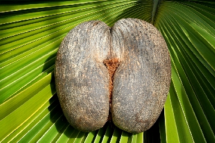
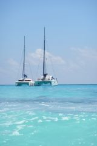

Po prawie 12 godzinach lotu dotarliœmy na Seszele jak to mówi¹: raj na Ziemi, ale Mahe przywita³o nas w sobotê tropikaln¹ ulew¹.
W jakis cudowny sposób uda³o siê nam przebookowaæ bilety na wczesniejszy lot lokalnymi liniamina Praslin. Samolot Viking Twin Otter wyposa¿ony by³
w doœæ oryginalne wyjœcie ewakuacyjne. Po 15 minutach lotu byliœmy na Praslin. Lokalne autobusy nie zabieraj¹ turystów z baga¿em,
wiêc pozosta³y tylko taksówki, ¿eby dostac sie do mariny Dream Yacht / Jetty.
W niedzielê rano szybko zrobilismy odbór Catany43 „COROT” , odbyliœmy „technical & map briefing” i po zakupach w lokalnym sklepie,
pojechaliœmy na wycieczkê do Vallée de Mai, aby zwiedziæ endemiczny las tropikalny - jedyne miejsce na Œwiecie (UNESCO),
w którym rosn¹ Coco de Mer (¿eñski), mêski kwiatostan wygl¹da ca³kiem inaczej. Ta swoista d¿ungla robi wra¿enie gestw¹ drzew i wszelkiej zieleni wœród gigantycznych granitowych g³azów. Po po³udniu trzeba by³o roz³upaæ kilka kokosów na wieczorne drinki.
Wieczorem pogoda znowu zaczê³a sie psuæ i w nocy przetacza³y siê ulewy i burze.
Œwiat jest jednak ma³y. W marinie St Anna Baie/Dream Yacht spotkalismy polsk¹ za³ogê na Lagoon 38 „Monthana”. Trzeba pogratulowaæ im „odwagi”, praktycznie bez doswiadczenia morskiego zdecydowali siê na Ocean Indyjski. Przez pierwsze kilka dni p³ywaliœmy
razem , aby w razie potrzeby s³u¿yæ im pomoc¹.
Nastepnego dnia pogoda zaczê³a siê klarowaæ i wczesnym popo³udniem oddaliœmy cumy i pop³ynêliœmy na La Digue i zakotwiczyliœmy w Anse Cocos.
We wtorek pop³ynêlismy na drug¹ stronê La Digue, aby w lokalnym markecie zrobiæ zakupy, a przy okazji na przystani promowej, kupiliœmy od kreoli czerwonego lucjanusa
(Red Snapper) na wieczornego grila. Wiatr solidnie os³ab³ (w porywach do 5 kts) i kilkoma halsami doturlaliœmy siê do wyspy Curieuse, godzinê przed zachodem s³oñca. W okó³ ³ódki pojawi³y siê ryby, jak je nazwaliœmy „patelniaki”- Plataks okr¹g³y. Rano przeprawiliœmy siê pontonem na wyspê do Parku Narodowego Curieuse. W oœrodku zajmuj¹cym siê utrzymaniem populacji ¿yje oko³o 300 ¿ó³wi olbrzymich.
Ponad 200 zó³wi ¿yje na wolnosci poza oœrodkiem. Œcie¿k¹ do oko³a zatoki, przez las mangrowców dotarlismy do Doctor's House,
domu Sir Wiliama MacGregora, który leczy³ na wyspie trêdowatych. Po po³udniu pop³ynêliœmy na dwie skaliste wysepki St Pierre, które okaza³y sie œwietnym nurkowiskiem. Na noc stanêliœmy na bojce
w zatoce przy Anse Possession. Nastêpnego dnia rano pop³ynêlismy na Anse Lazio, jak mówi¹ jedn¹ z 10 najpiêkniejszy pla¿ na Œwiecie. Pla¿a du¿a, trochê przereklamowana,
z k¹pieliskiem otoczonym sieci¹, kika lat temu rekin zaatakowa³ tam anglika i niestety nie uda³o siê go uratowaæ. Tu¿ za pla¿¹, wœród drzew s¹ dwie knajpy, polecana to „Le Chevalier”.
Wóciliœmy na pó³nocno-wschodni brzeg Praslin, poniewa¿ w zatoce Cote D'or jest na
najbli¿szy sklep, a konieczne by³o uzupe³nienie zapasów jedzenia i picia, przed przeskokiem na Mahe. Sklep okaza³ siê ca³kiem nieŸle zaopatrzony, na koniec hidnus da³ nam ma³y rabat za
ca³oœæ zakupów. Ca³a zatoka jest pokryta raf¹ i przy odp³ywie powrót na ³ódkê wi¹¿e siê z kluczeniem miêdzy formacjami korali. Pop³ynêliœmy znów na pó³noc, minêliœmy Point Chevalier,
a naszym celem by³a Cousine, ma³a prywatna wysepka, gdzie rzuciliœmy kotwicê staj¹c na noc. Na t¹ wyspê przyp³ywaj¹ ¿ó³wie szylkretowe
i na pla¿y sk³adaj¹ jaja. Niestety ¿aden siê nie pojawi³. Nastepnego ranka ruszyliœmy wkierunku Mahe, kieruj¹c siê na North Point, a potem na po³udnie do Mariny Eden. Nasze Panie szybko zakrêci³y siê po marinie i od ma³ego kreolczyka kupi³y ³adnego
pstr¹ga koralowego z angielskiego coral trout lub leopard coral grouper, bardzo smaczny okoñ morski.
Rano serwisant wymieni³ nam popsuty w³¹cznik windy kotwicznej. Po zakupach w supermarkecie w marinie (nie polecam drogo) pop³ynêliœmy na niedalekie wysepki do St Anna Marine Park. W czsie nurkowania na rafie spotka³em murenê, która bardzo ³adnie pozowa³a do zdjêæ.
Okaza³o siê, ¿e St Anna Marine Park jest czynny od 9:00 do 17:00, czyli w tym czasie stra¿nicy parku pobior¹ op³atê po 200 rupii od ka¿dego cz³onka za³ogi. Po 17:00 bojka lub postój na kotwicy to jedyne 250 rupii od ³ódki. Ta zasada obowi¹zuje
we wszystkich parkach morskich i podwodnych na Seszelach.
Nastêpnego ranka pop³ynêliœmy znowu w kierunku North Point na Mahe i przecinaj¹c zatokê Baie Beau Vallon stanêliœmy w urokliwej Baie Jassmine obok równie polecanej Anse Major.
Baie Jassmine to zatoczka z wewnêtrzn¹ raf¹, z trzema ma³ymi pla¿ami, otoczona od NW wa³em granitowych ska³. 9 Grudnia rano krótki przeskok do zatoczki Baie Ternaye - Marine Park,
do której wiele razy zagl¹da³y rekiny wielorybie. Znów nie mieliœmy czêœcia. Poniewa¿ nie by³o odrobiny wiatru a skwar by³ okrutny pop³unêlismy na silniku na wysepkê Terese, gdzie zrobiliœmy przerwê na k¹pió³kê, nurkowanie i zbieranie muszelek.
Kolejny przystanek to Grand Anse, „wymuszony” koniecznoœci¹ uzupe³nienia zapasów. W obrêbie Grand Anse s¹ dwa sklepy, mniej wiêcej poœrodku zatoki jest hindus, ca³kiem nieŸle zaopatrzony, kupiliœmy kolejnego strzêpiela. Na Grand Anse s¹ doœæ silne fale przybojowe, tak ¿e powrót z zakupami okaza³ siê mocno mokry, ale
dwa kartony z zaopatrzeniem zosta³y szczêœliwie ocalone, ale silnik zaburtowy zacz¹³ powa¿nie niedomagaæ. Nastepnego dnia rano pop³ynêliœmy na po³udniowy kraniec Mahe i po miniêciu „Capucyn Head”
zmieniliœmy kurs na pó³noc w kierunku Victorii. Takich ska³ jak „G³owa Kapucyna” jest pomiêdzy wyspami doœæ du¿o i s¹ nie oznakowane, w czasie odp³ywu s¹ widoczne, ale przy przyp³ywie a szczególnie w nocy stanowi¹ du¿e zagro¿enie. Rzuciliœmy kotwicê w zatoczce Anse Royale,
w ciasnym przesmyku miêdzy raf¹ koralow¹. Poza nazw¹ to niæ królewskiego w tej zatoce nie mo¿na by³o znaleŸæ, no trochê la³o po królewsku. W ostatni pi¹tek rejsu pop³ynêliœmy okrê¿n¹ drog¹ przez Park St Anna, z myœl¹, ¿e tam staniemy na bojce, ale dezyzj¹ ogó³u na ostatni wieczór wróciliœmy do Mariny Eden.
W sobotê rano upa³, pakowanie i zdanie ³ódki, a potem wypad do centrum Victorii na zakupy i zwiedzanie. Wieczorem na lotnisko i o 20:30 lot do Abu Dhabi, dalej ca³a noc lotu i w niedzielê po 10:00 byliœmy ju¿ na Okêciu.
Reasumuj¹c, pomimo pory deszczowej (mosuny) pogoda by³a zadziwiajaco dobra i upalna 32°C, z wy³¹czeniem wiatru. Wiatr w tym okresie g³ównie NW, przeciêtnie 5 do 7 kts, nie dawa³ szans na specjalnie dalekie przeloty, wiêc koniecznoœci¹ by³o ominiêcie
niektórych ciekawych wysp. Ten rejon ¿eglarski jak najbardziej jest godzien polecenia, ze wzglêdu na wiele lokalnych atrakcji i uroku lokalnej przyrody i unikalnego krajobrazu.
ZA£OGA: Dorota, Ewa, Iwonka, Jola, Bartek, Tomek, Robert